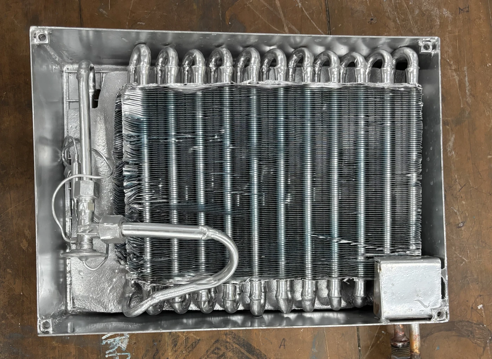
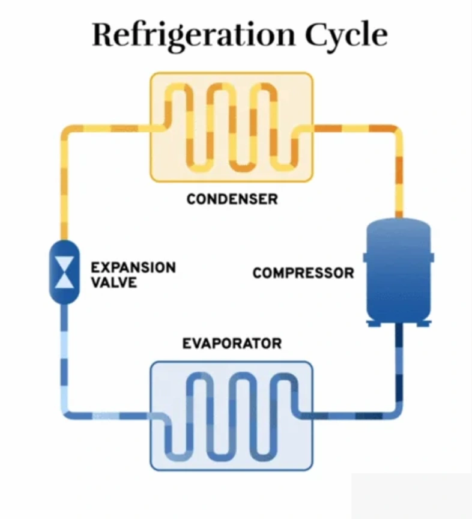
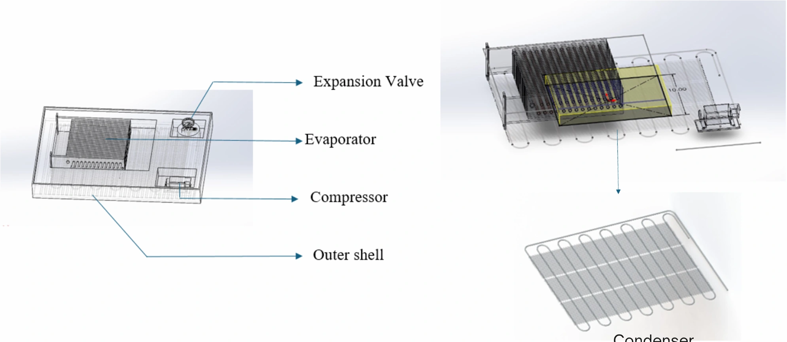
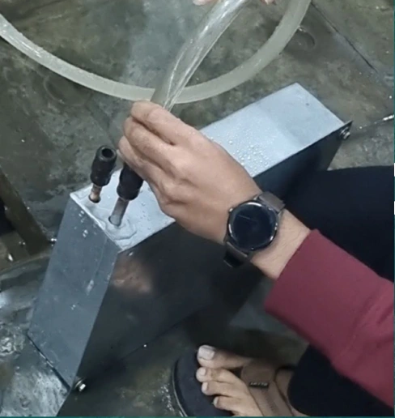
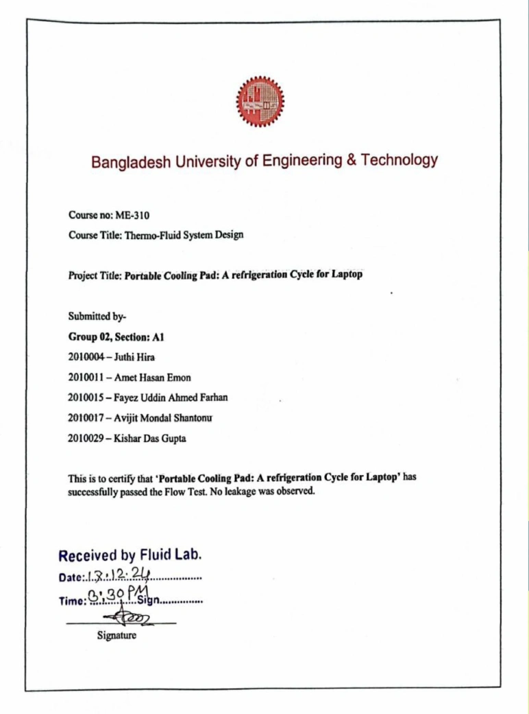
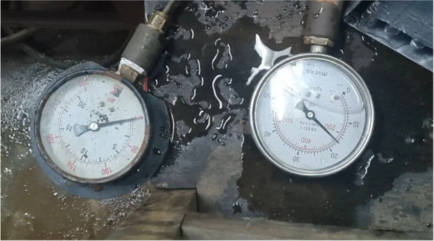
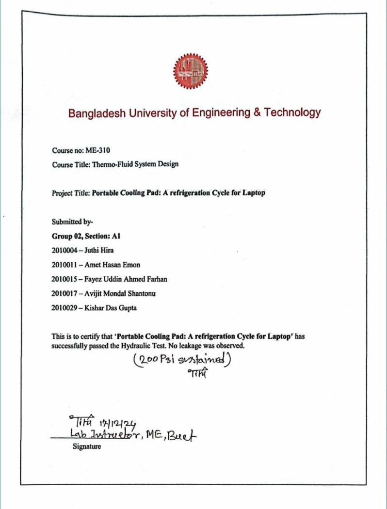

Portable Cooling Pad: A Refrigeration Cycle for Laptop
August 2024 – March 2025 · Undergraduate group project
Project Overview
A compact laptop-cooling concept built around an R-134a vapor-compression cycle. The project combined SolidWorks packaging, thermal sizing, copper-tube fabrication, and laboratory integrity testing.
The fabricated heat-exchanger assembly is the central prototype artifact. Flow and hydraulic-pressure tests provide the documented experimental evidence.


Concept & Working Principle
The proposed evaporator absorbs heat near the laptop. Refrigerant then passes through compression, heat rejection in the condenser, and pressure reduction at the expansion valve before returning to the evaporator.
The design packages this closed loop within a portable pad, aiming to provide active cooling beyond an external fan alone.


Mechanical Design & CAD Development
SolidWorks studies arranged the evaporator, condenser, expansion valve, and proposed compressor within a 14 × 10 × 3 inch enclosure. Assembly views guided component placement and the routing of the heat-exchanger coils.


Thermal Design & Key Calculations
Hand calculations and Python-based modelling were used to estimate heat-transfer requirements and coil lengths. The report uses thermal-resistance and convection calculations; the key design inputs and results are summarized below.
| Parameter | Value | Context |
|---|---|---|
| Refrigerant | R-134a | Selected working fluid |
| Cooling duty / COP | 150 W / 3 | Reported design ratings |
| Compressor input | 50 W | Specified; availability remained a constraint |
| Evaporator / condenser tubing | 5.56 m / 2.78 m | Reported sizing results |
| Tube diameter / wall | 9.5 mm / 1 mm | Copper-tube design dimensions |
| Evaporator calculation temperatures | 5 °C / 50 °C | Refrigerant-side / external reference |
| Condenser heat rejection | 200 W | Reported calculation basis |
These are design values, not a measured laptop-temperature reduction or experimentally established operating COP.
Fabrication & Experimental Testing
Copper tubing and fins were assembled into the heat-exchanger prototype, with joints and fittings completed for laboratory testing.


The circuit passed the documented flow test, with no leakage reported.




The prototype sustained 200 psi during the documented hydraulic test, with no leakage reported.


Project Outcomes & Future Improvements
The project produced CAD packaging, a thermal design basis, a fabricated heat-exchanger assembly, and successful flow and pressure-integrity tests. The available records do not establish sustained refrigeration performance under a laptop load.
Key constraints were system size, weight, design complexity, and the unavailability of the specified 50 W compressor. Future development focuses on a compact compressor or pre-assembled refrigeration module, smaller heat exchangers, lower-global-warming-potential refrigerants, and improved energy efficiency.